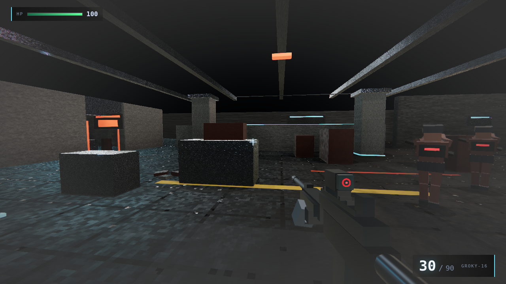
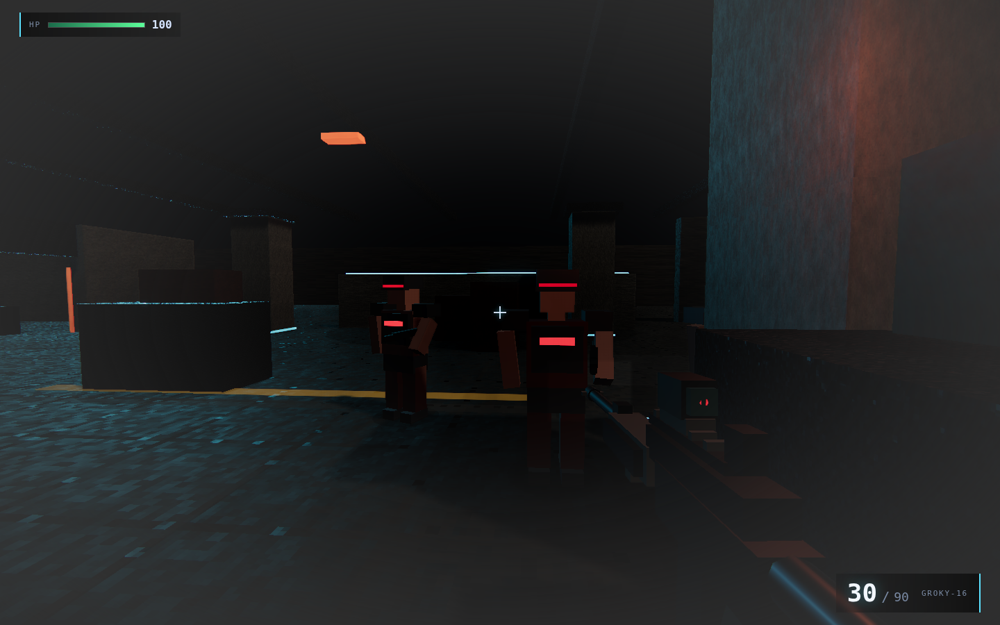
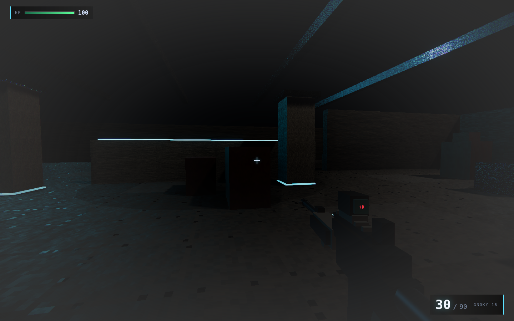
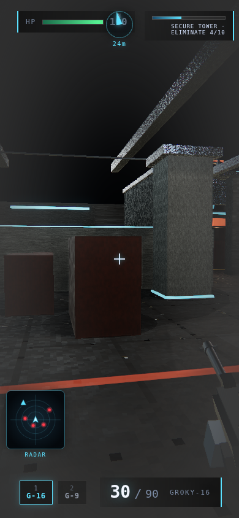

Game Pages stay at repo root (/call-of-groky/). This page is a docs index for the repository tree; it is not part of the Vite dist/ deploy unless copied separately.
README · RELEASE · CHANGELOG · ROADMAP · PROGRESS · PLAN · gallery · LICENSES




Dokumentations-Hub. Spiel bleibt unter der Root-Pages-URL.